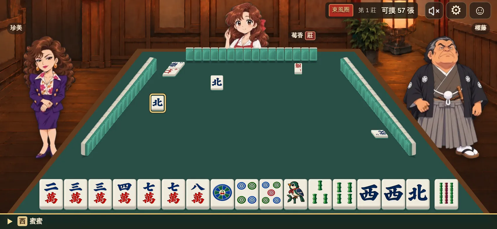

MIMI · CHARACTER LAB
返回正式牌桌角色演出測試台
直接試播，對照實際牌桌比例與動作節奏。
牌桌效果
演出預覽 · 牌局不會推進
正在載入牌桌…
載入中
胡牌演出 ·
選角色用上方名單；點預覽畫面可跳過演出
胡
1台
示意 · 背景為牌桌截圖，結算為簡化版
動作
調速與長度僅影響這個測試台。語音保持自然速度；暫停或拖曳不會重新喊話。角色尚未製作的動作會標示為待製作。
直接試播，對照實際牌桌比例與動作節奏。

調速與長度僅影響這個測試台。語音保持自然速度；暫停或拖曳不會重新喊話。角色尚未製作的動作會標示為待製作。